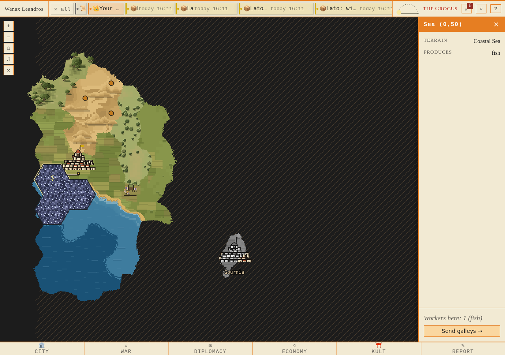
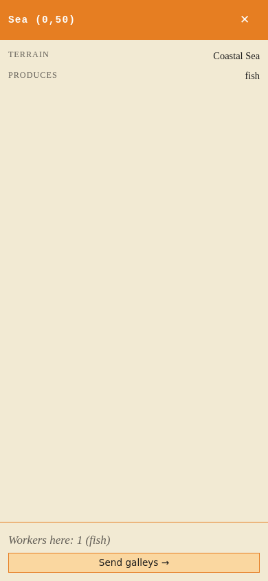
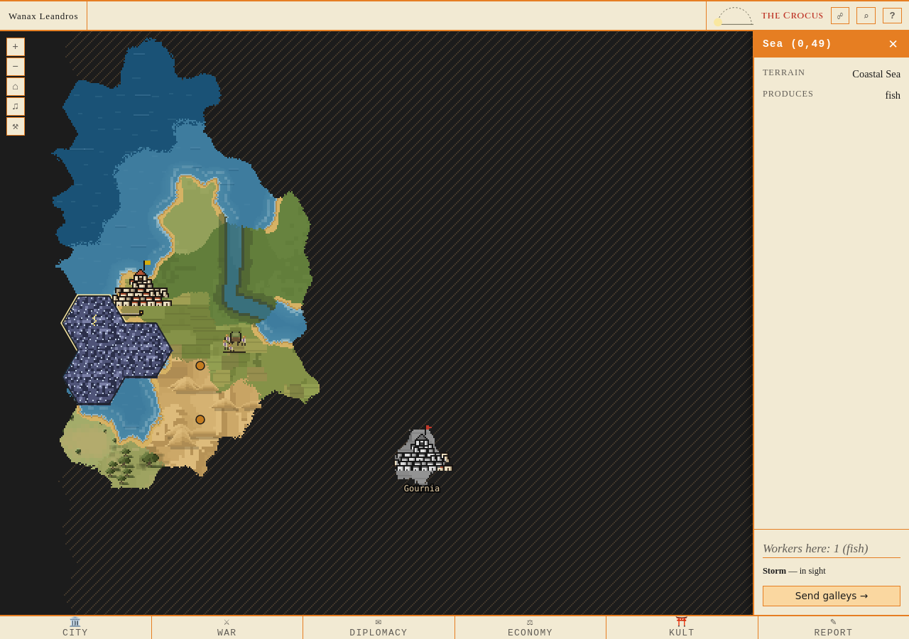
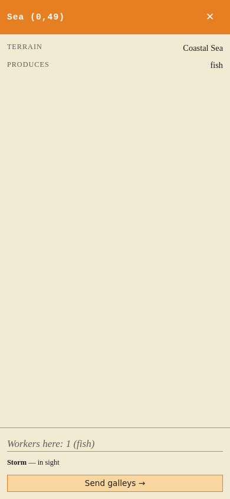
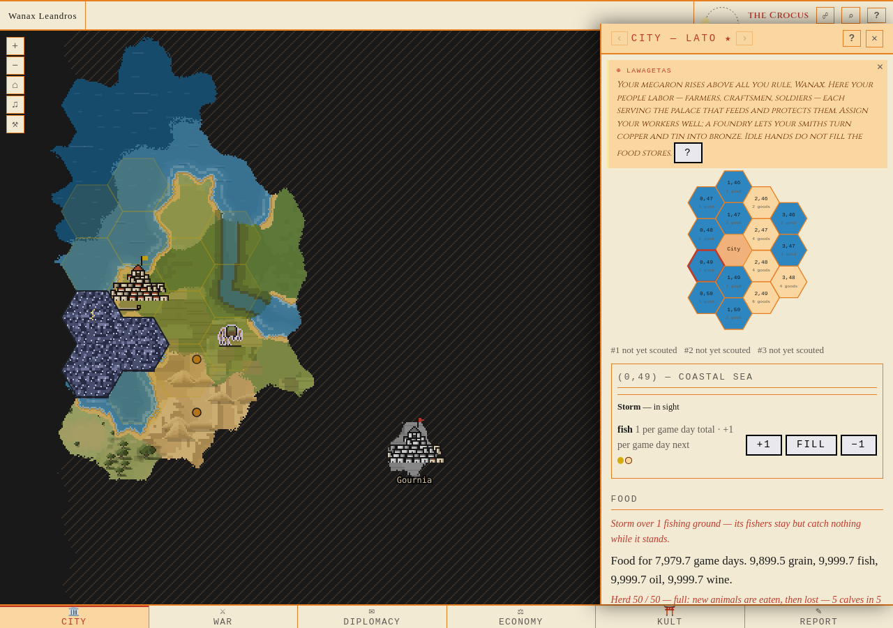
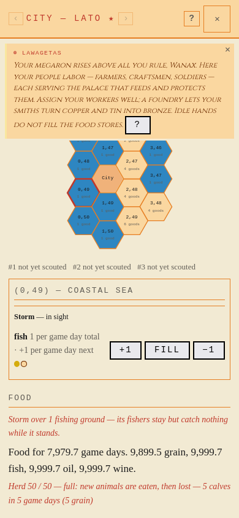
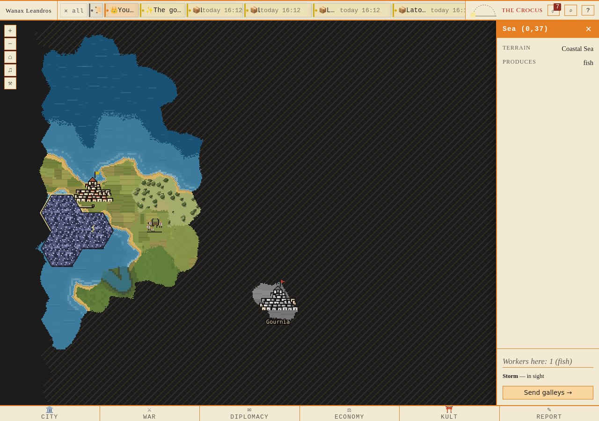
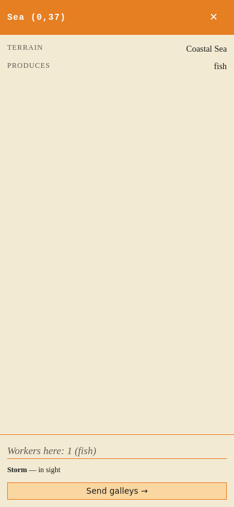
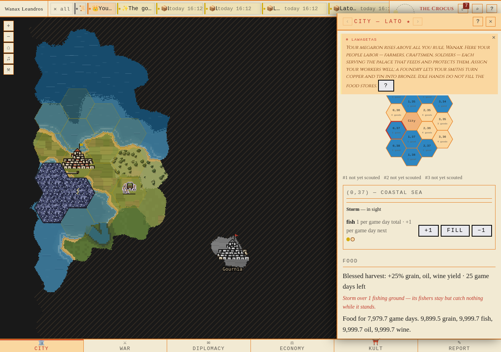
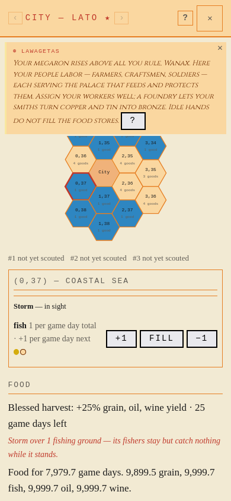

baseline · entered-open-hex-1280.png

baseline · entered-open-hex-390.png

fixed-1 · entered-open-hex-1280.png

fixed-1 · entered-open-hex-390.png

fixed-1 · city-workplace-1280.png

fixed-1 · city-workplace-390.png

fixed-2 · entered-open-hex-1280.png

fixed-2 · entered-open-hex-390.png

fixed-2 · city-workplace-1280.png

fixed-2 · city-workplace-390.png
